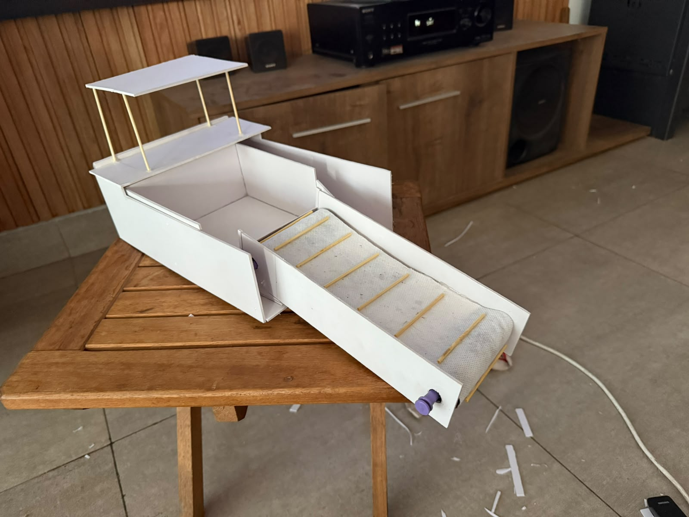

Equipo de estudiantes
El proyecto EcoBoat Suquía fue desarrollado por:
- • Victoria Gros
- • Julia Fossi
- • Lola Montoya
- • Delfina García
EcoBoat Suquía es un proyecto desarrollado para la Feria de Ciencias con el objetivo de aplicar conocimientos científicos y tecnológicos en la búsqueda de una solución sustentable para la contaminación del río Suquía. A través de la investigación, el diseño y el trabajo colaborativo, buscamos demostrar cómo la innovación puede contribuir al cuidado del ambiente.

Este proyecto fue realizado de manera colaborativa por estudiantes del Instituto Privado Nuestra Señora del Rosario del Milagro, con el acompañamiento del profesor responsable.
El proyecto EcoBoat Suquía fue desarrollado por:

Prof. Marcos González
Acompañó y orientó el desarrollo del proyecto, brindando apoyo durante las etapas de investigación, diseño y construcción del prototipo.
Pedro Morad

EcoBoat Suquía fue desarrollado por estudiantes del Instituto Privado Nuestra Señora del Rosario del Milagro como parte de la Feria de Ciencias 2026.
El proyecto representa la integración de conocimientos adquiridos durante la formación escolar, promoviendo la investigación, la creatividad y el compromiso con el cuidado del ambiente mediante una propuesta innovadora.
El propósito del proyecto es desarrollar una alternativa sustentable para reducir la contaminación del río Suquía mediante el uso de energías renovables y un sistema automatizado de recolección de residuos flotantes.
Diseñar una solución tecnológica que contribuya a la limpieza del río utilizando energía solar.
Promover el uso de energías renovables para reducir el impacto ambiental y proteger los recursos naturales.
Integrar conocimientos científicos y tecnológicos mediante el esfuerzo conjunto de estudiantes y docentes.
Investigar para comprender y resolver problemas reales.
Promover el cuidado y la conservación del río Suquía.

Buscar nuevas soluciones mediante la innovación.
Trabajar con responsabilidad para generar un impacto positivo.

El desarrollo de EcoBoat Suquía nos permitió aplicar conocimientos de Física, Ingeniería Mecánica, Ingeniería Eléctrica y Ciencias Ambientales para resolver un problema real de nuestra comunidad.
Más allá del prototipo, este proyecto fortaleció el trabajo en equipo, la investigación y el compromiso con el cuidado del ambiente, demostrando que la innovación puede generar cambios positivos.
Esperamos que este proyecto inspire nuevas ideas para proteger nuestros recursos naturales y demuestre que la ciencia, la tecnología y el trabajo colaborativo pueden construir un futuro más sustentable.